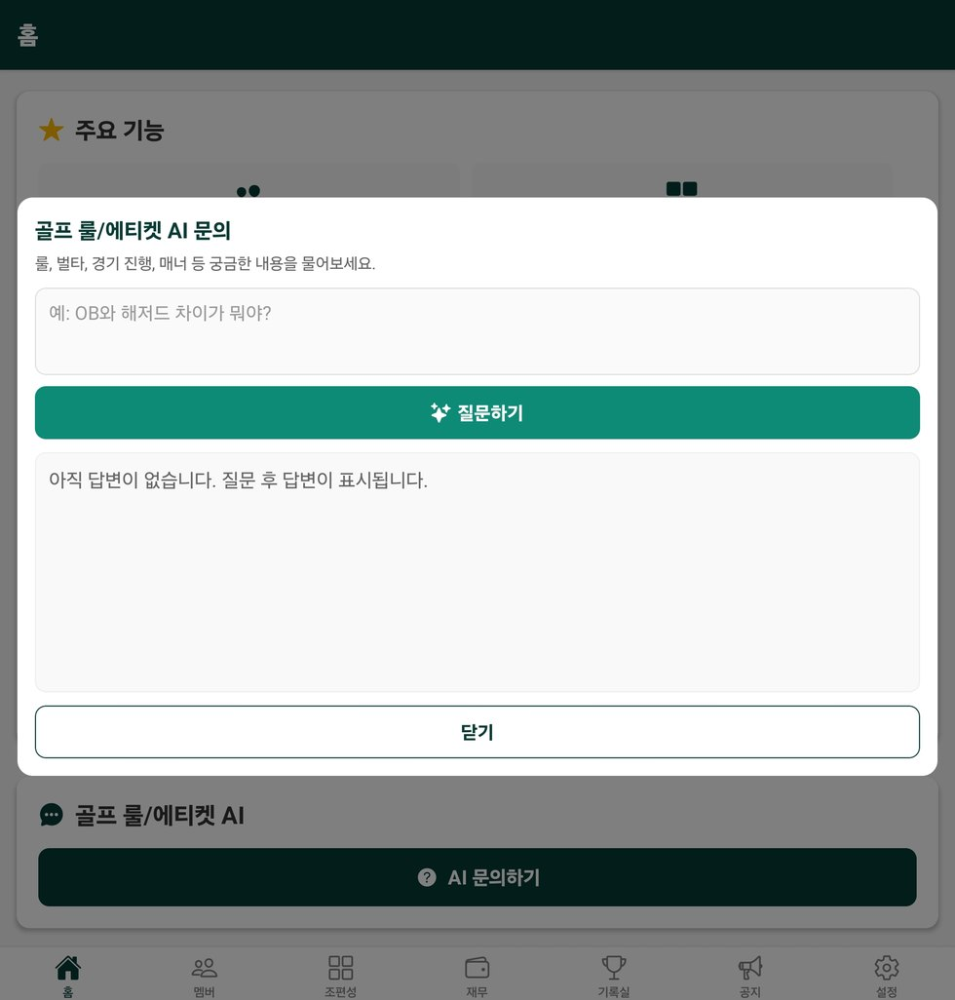
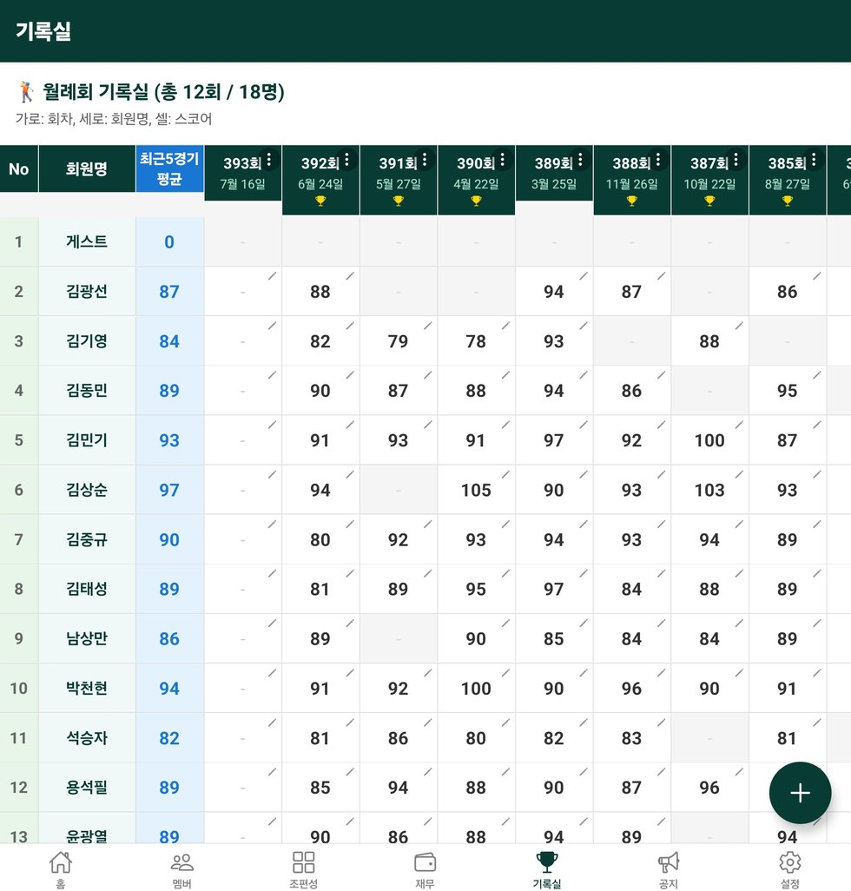
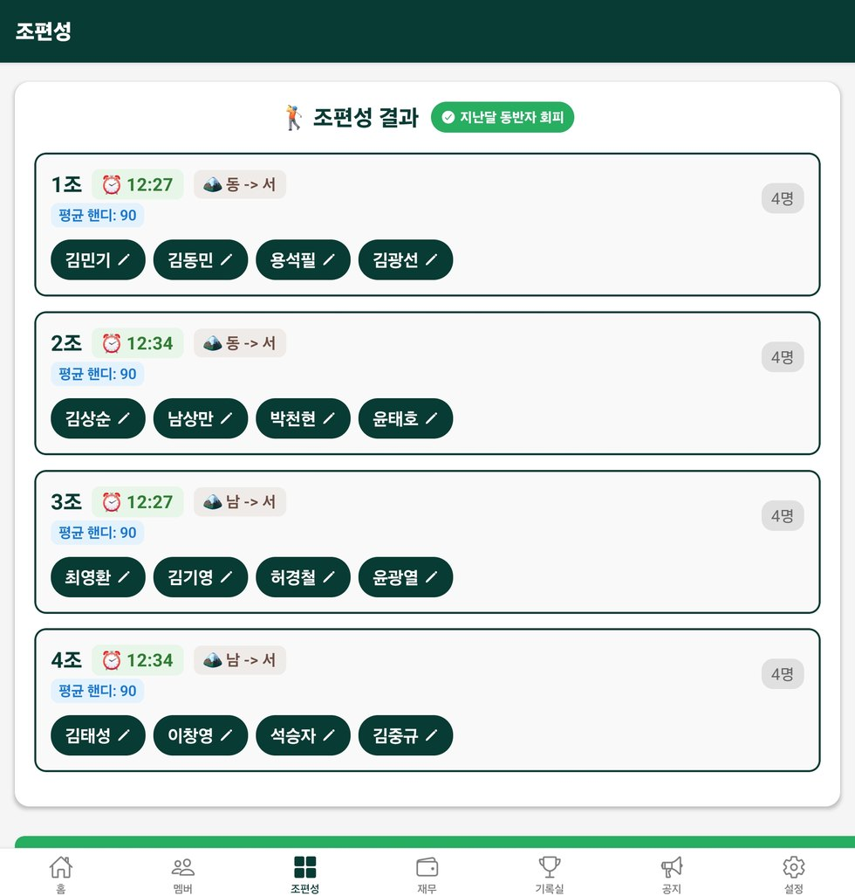
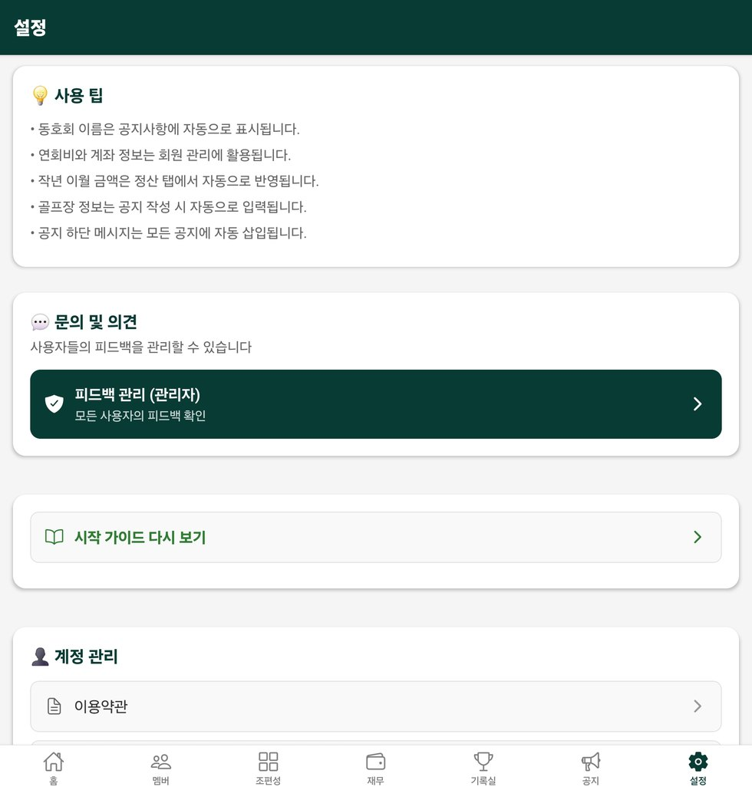
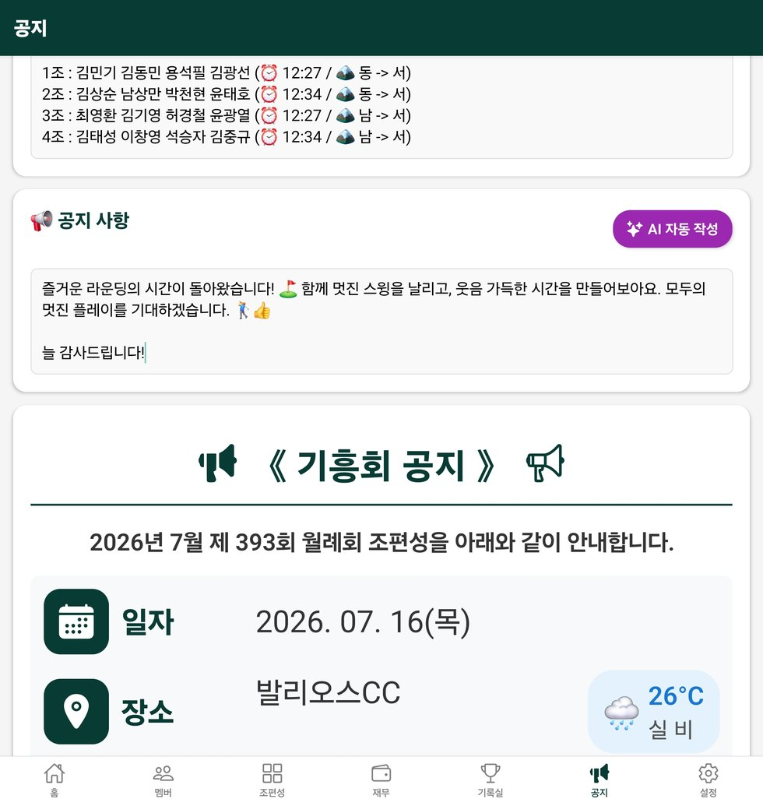
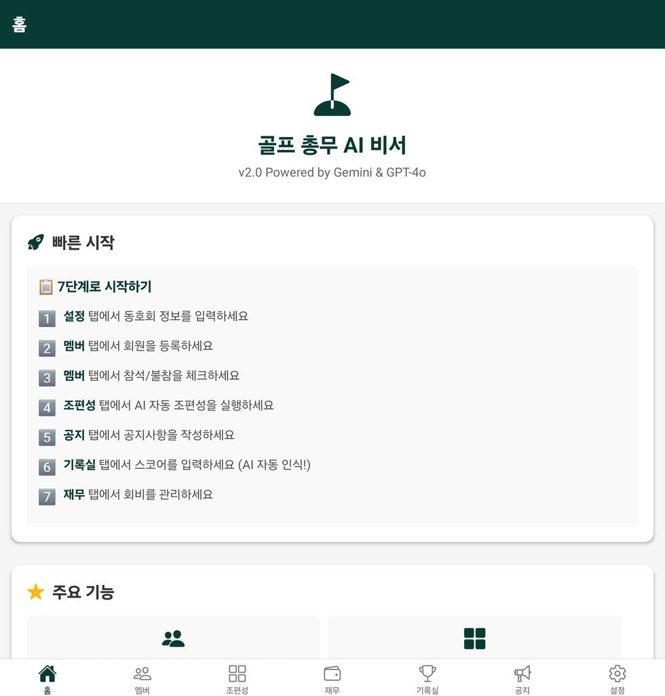
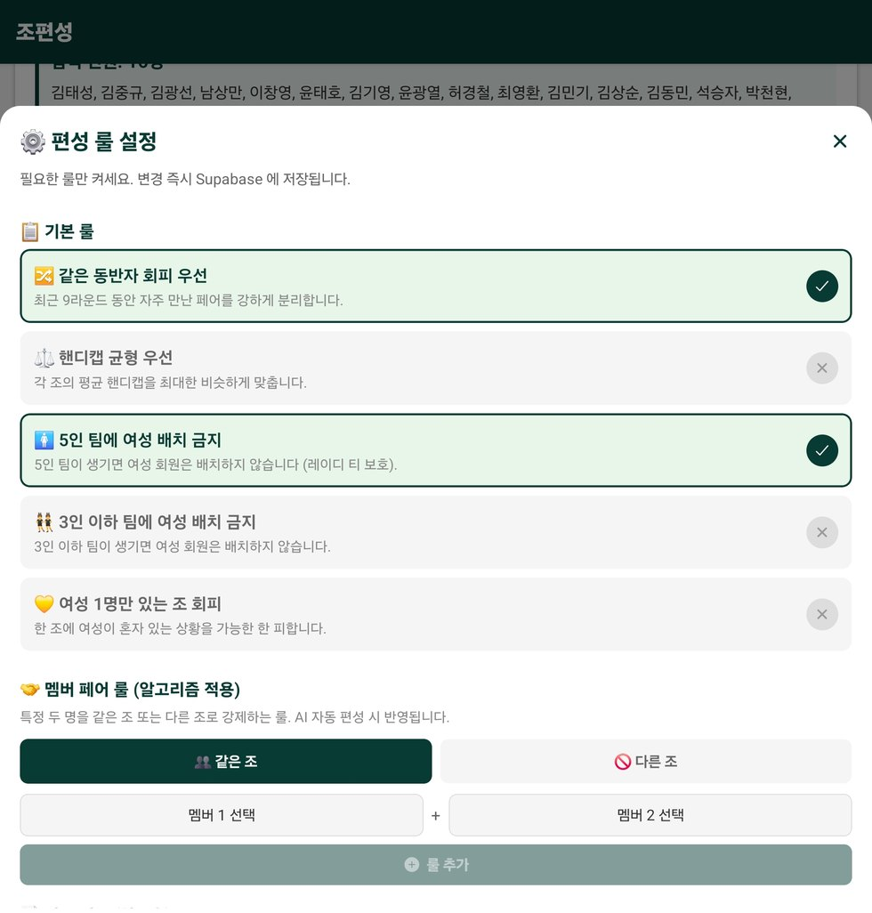
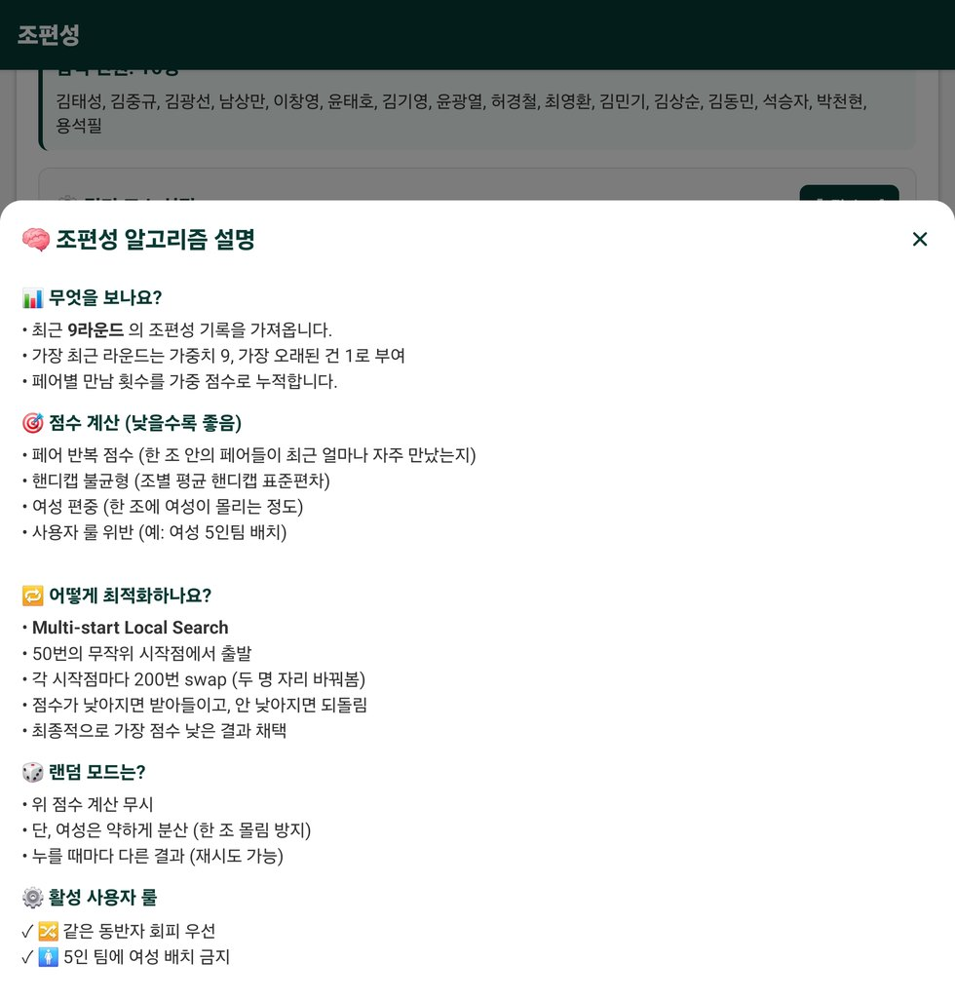
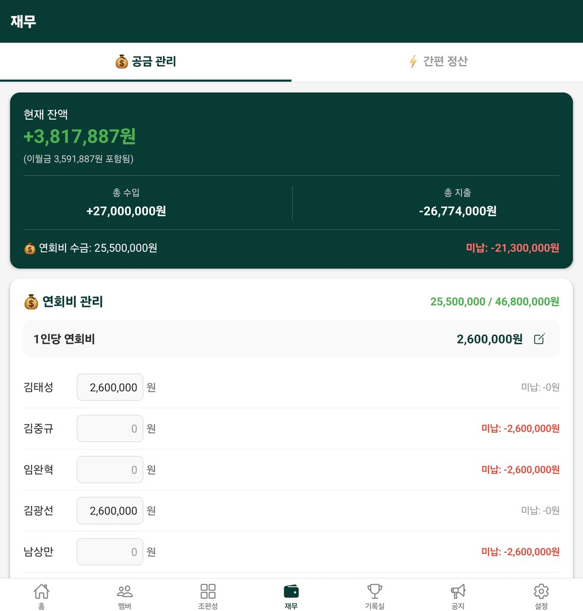

📋
참석자 정리가 번거로울 때
단톡방 답변을 보고 참석/불참을 체크하고, 실제 참석자 기준으로 조편성까지 이어갑니다.
매월 반복되는 참석 확인, 조 나누기, 라운드 공지 작성, 골프장 날씨 안내, 전체 스코어카드 사진 등록, 수상자 선정, 회비 계산을 더 빠르고 깔끔하게 처리합니다.
단톡방 답변을 보고 참석/불참을 체크하고, 실제 참석자 기준으로 조편성까지 이어갑니다.
핸디캡과 기록을 참고해 조별 균형을 맞추고, 필요한 경우 직접 조정할 수 있습니다.
라운드 안내, 모임 공지, 경조사 안내를 AI가 단톡방에 올리기 좋은 문장으로 정리합니다.
회원 정보, 핸디캡, 참석 여부, 게스트 여부를 관리합니다.
참석 인원, 핸디캡, 최근 기록을 기준으로 조별 실력 균형을 맞춘 조편성안을 만듭니다.
조편성 결과, 날짜, 장소, 티오프, 준비사항을 단톡방에 올리기 좋은 공지문으로 정리합니다.
라운드 후 전체 스코어카드 사진을 올리면 선수별 홀 스코어를 읽어 기록 입력을 도와줍니다.
수상 이력과 중복 방지 기준을 반영해 공정한 시상을 돕습니다.
연회비, 지출, 이월금, 잔액을 한 화면에서 정리합니다.
선택한 골프장, 라운드 날짜, 티오프 시간 기준의 날씨 정보를 공지문에 함께 넣어줍니다.
벌타, 드롭, OB, 해저드, 로컬룰처럼 헷갈리는 상황을 질문하면 이해하기 쉽게 안내합니다.
참석자, 조편성, 공지, 스코어, 수상, 정산을 월별 기록으로 남겨 다음 모임에 활용합니다.
총무가 실제로 가장 많이 시간을 쓰는 조편성 공지, 스코어 입력, 룰 문의 대응을 앱 안에서 이어서 처리할 수 있게 구성했습니다.


라운드가 끝난 뒤 스코어카드 전체 사진을 올리면, AI가 이름과 홀별 스코어를 읽어 기록 입력을 빠르게 도와줍니다.

회원 참석 여부를 체크한 뒤 AI 조편성을 실행하면, 조별 명단과 라운드 정보를 공지문·공유 이미지 형태로 정리합니다.


공지 생성 시 골프장 위치, 라운드 날짜, 티오프 시간을 기준으로 날씨를 확인해 회원들이 준비할 내용을 함께 안내합니다.

OB, 페널티 구역, 언플레이어블, 드롭 위치, 벌타 계산처럼 라운드 중 자주 나오는 질문을 쉽게 풀어 답변합니다.
회원별 참석/불참, 게스트 여부, 연락처, 핸디캡을 관리해 조편성의 기준 데이터를 만듭니다.
참석자, 핸디캡, 최근 기록을 기준으로 조를 구성하고, 결과를 이미지와 공지문으로 만들어 카카오톡에 공유할 수 있습니다.
라운드 안내, 조편성 결과, 골프장, 티오프 시간, 해당 시간대 날씨, 준비물, 경조사 공지를 입력하면 단톡방에 올리기 좋은 문장으로 정리합니다.


라운드 후 전체 스코어카드 사진을 등록해 선수별 스코어를 빠르게 정리하고, 수상자와 회비·지출 내역까지 함께 관리합니다.

동호회 정보를 먼저 넣고, 회원 등록 → 참석자 체크 → AI 조편성 → 공지 공유 → 스코어카드 사진 등록 → 수상/정산 순서로 사용하면 가장 편합니다.
스크린샷을 눌러 크게 확인할 수 있습니다.
네. 총무 업무 흐름에 맞춰 설정, 회원 등록, 참석 체크, 조편성, 공지 작성 순서로 쓰면 됩니다.
AI가 먼저 제안한 뒤, 총무님이 실제 상황에 맞게 일부 인원을 조정할 수 있습니다.
공지와 조편성 결과를 단톡방에 공유하기 좋은 형태로 정리해 사용할 수 있습니다.
부총무 관리 기능을 통해 운영 업무를 나누고, 총무가 바쁠 때도 모임 관리를 이어갈 수 있습니다.
전체 스코어카드 사진을 기반으로 AI가 선수별 스코어 입력을 도와줍니다. 총무님이 확인 후 확정하면 기록실과 수상자 선정에 활용할 수 있습니다.
OB, 벌타, 드롭, 언플레이어블, 페널티 구역처럼 헷갈리는 상황을 자연어로 질문하면 참고용 답변을 제공합니다. 실제 경기 규정은 대회/로컬룰 기준을 함께 확인하면 좋습니다.
네. 골프장, 라운드 날짜, 티오프 시간을 기준으로 해당 시간대 날씨를 확인해 기온, 비 예보, 바람, 준비물 안내를 공지문에 함께 넣을 수 있습니다.
참석자 체크, 조편성 공지 생성, 골프장·시간대별 날씨 안내, 전체 스코어카드 사진 등록, 골프 룰 AI 답변, 수상·정산까지 더 세밀하게 관리하세요. 복잡한 총무 업무는 골프총무AI비서에 맡기고 라운드에 집중하세요.
{kind=link}
{kind=link}
{kind=link}
{kind=link}
{kind=link}
{kind=link}
{kind=link}
{kind=link}
{kind=link}
{kind=link}
{kind=link}
{kind=link}